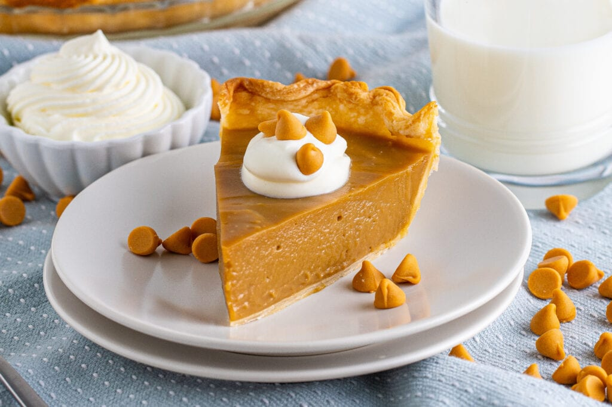

Cinnamon Pie

Ingredients
For the crust:
- 1 1/4 cups All-Purpose Flour
- 1/2 cup Butter
- 1/4 cup Ice Water
- 1/4 tsp Salt
For the filling:
- 1 1/2 cups Whole Milk
- 1/2 cup Cream
- 2/3 cup Light Brown Sugar
- 2 Egg Yolks, whisked
- 4 tbs. Corn Starch
- 1 tbs. Unsalted Butter
- 1/2 tsp. Cinnamon
- 1/2 tsp Salt
For the topping:
- 1 cup Heavy Whipping Cream
- 2 tbs Granulated Sugar
- Cinnamon (for sprinkling)
Directions
- Preheat oven to 375 F. In a mixing bowl, combine flour and salt. Cut in butter until the mixture resembles coarse crumbs.
- Stir in the iced water a little bit at a time, until the dough comes together and you are able to form a ball. Wrap the ball of dough in plastic wrap and chill for at least 4 hours.
- Using a pastry roller, roll out the dough to fit a 9-inch pie tine and press the dough evenly into the bottom and sides of the tin. Cut off excess.
- Bake the crust by itself at 375 degrees F for 7 minutes. Remove from oven and set aside.
- Time to start on the filling. In a double boiler, combine the milk, cream, brown sugar, cornstarch, salt and cinnamon. Stir the mixture using a whisk and keep stirring until the mixture thickens. If you don't have double boiler, use this method for a makeshift one.
- Whisk in the egg yolks, pouring them in slowly. Continue to whisk constantly until the mixture thickens to almost the consistency of pudding.
- Remove from heat, then add the butter and vanilla and stir some more, until both are completely incorporated.
- Pour the mixture into the pie crust.
- Bake pie at 375 F for another 7 minutes, then remove from oven.
- Let the pie cool in the fridge until it's at least room temperature. When it's almost done cooling, prepare the whipped cream: Add the cream and sugar into a mixing bowl and whip with hand mixer until you are able to form peaks. Be careful not to over-whip.
- Spread whipped cream on top of the chilled pie and finish with sprinkled cinnamon.